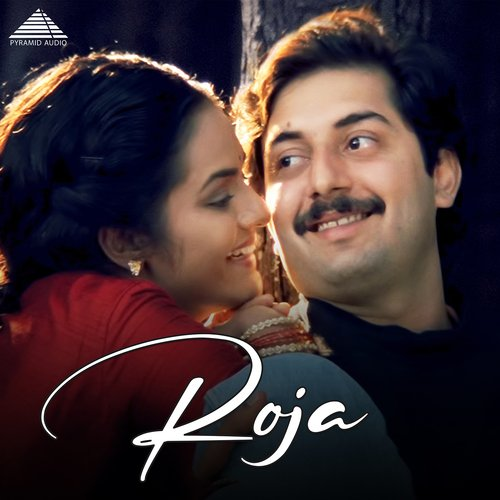
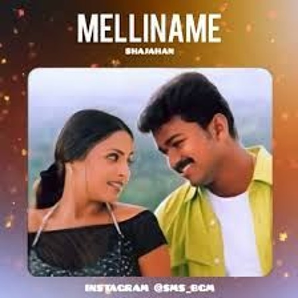

Vairamuthu, whose full name is Vairamuthu Ramasamy, is a renowned Indian lyricist and poet primarily known for his work in Tamil cinema. He has made significant contributions to Indian music, particularly through his collaborations with some of the most prominent music composers, including Ilaiyaraaja and A.R. Rahman. While Vairamuthu is best known for his lyrics rather than singing, his impact on the music industry is profound.
|  | Kadhal-Rojave |
|
Kadhal-Rojave |
||
|  | Mellinamae-Mellinamae |
|
Snehidhane |
||
 |
Thaaye Thaaye |